نبراسالإيمان
مدرسة خاصة بمنهاج أمريكي في منطقة العزرة بالشارقة، معتمدة من Cognia. نستقبل البنين والبنات من ما قبل الروضة حتى الصف الرابع، ومن الصف الخامس حتى الثاني عشر نحن مدرسة للبنات. وكل طالب يتعلّم القرآن الكريم من الروضة.
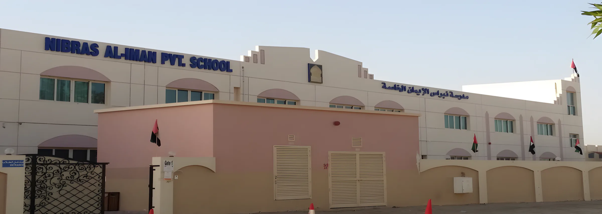
من ما قبل الروضة حتى الصف الثاني عشر
يبدأ الصغار معنا من عمر ثلاث سنوات. البنين والبنات معاً حتى الصف الرابع، ومن الصف الخامس حتى الثاني عشر المدرسة للبنات.
بنين وبنات من ما قبل الروضة حتى الصف الرابع
- ما قبل الروضة3 سنوات
- KG14 سنوات
- KG25 سنوات
- الأول6 سنوات
- الثاني7 سنوات
- الثالث8 سنوات
- الرابع9 سنوات
بنات فقط من الصف الخامس حتى الثاني عشر
- الخامس10 سنوات
- السادس11 سنة
- السابع12 سنة
- الثامن13 سنة
- التاسع14 سنة
- العاشر
- الحادي عشر
- الثاني عشر
الأعمار حسب جدول سن القبول في المدرسة، للمواليد من 1 سبتمبر إلى 31 أغسطس. الجدول كاملاً والأوراق المطلوبة
القرآن الكريم لكل طالب، من الروضة
ندرّس المنهاج الأمريكي، وإلى جانبه يتعلّم كل طلابنا القرآن الكريم ابتداءً من الروضة. وتقيم المدرسة مسابقة القرآن الكريم وحفلاً لتكريم الطلاب المشاركين فيها.
«نغرس في طلابنا قيم اللطف ومراعاة الآخرين والمسؤولية الفردية، ونقدّم لهم تحدياً عالياً يقابله دعم بالقدر نفسه.»من كلمة مديرة المدرسة
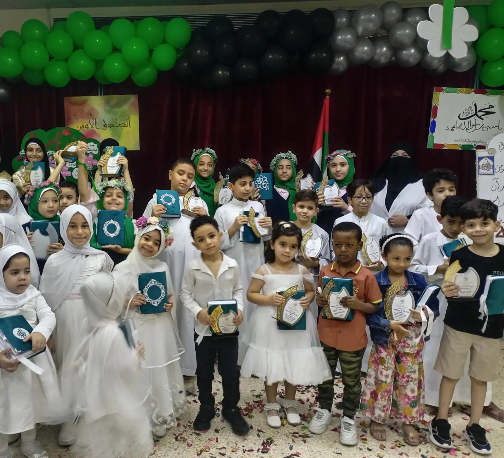
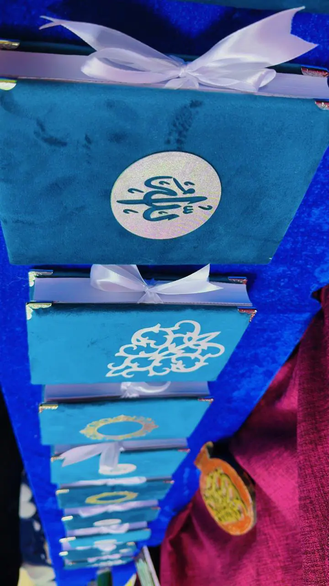
نتائج نفخر بها
المركز السادس على الشارقة في اختبارات TIMSS 2019. وحقق طلابنا درجات أعلى من المتوسط العالمي في الرياضيات والعلوم.من كلمة مديرة المدرسة
سنوات من اعتماد Cognia. اعتمدت المدرسةَ هيئةُ Cognia الأمريكية بتقدير ممتاز لمدة خمس سنوات، فمعاييرنا تقاس بمقاييس الجودة الدولية.من صفحة «من نحن» وكلمة المديرة
عام في نبراس
صور من ألبومات المدرسة. اسحب لمشاهدة المزيد.
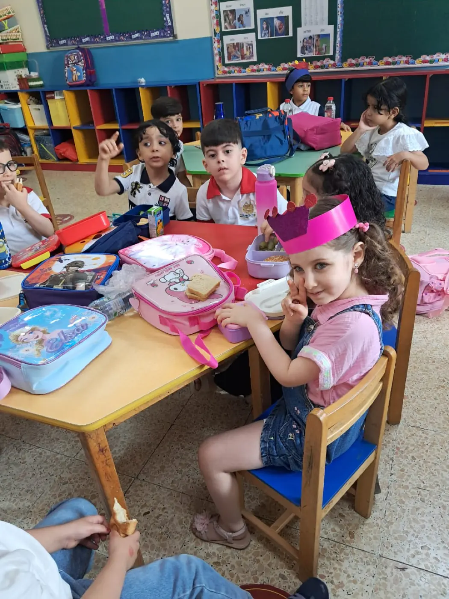
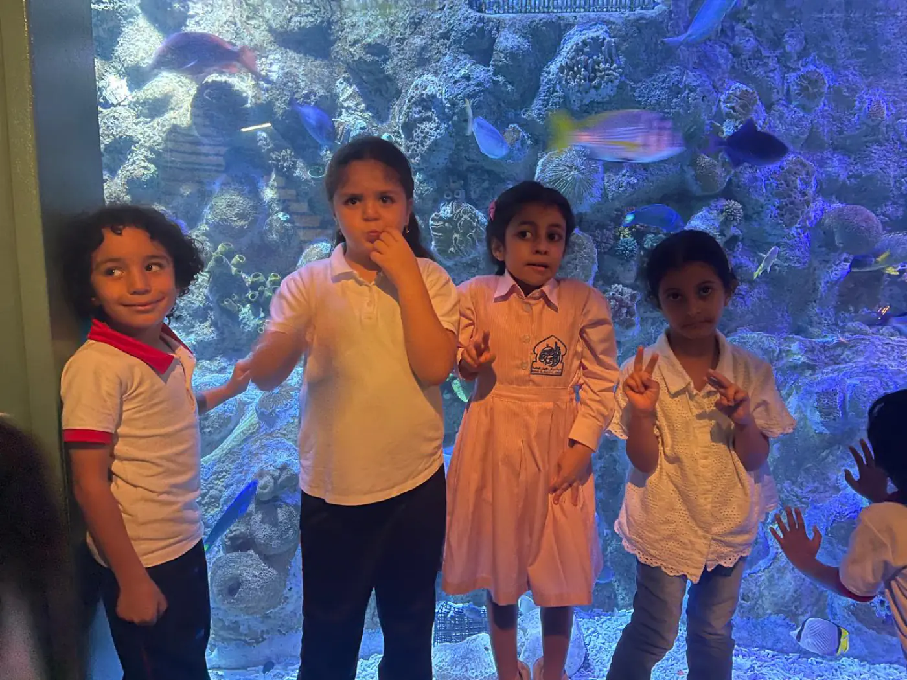
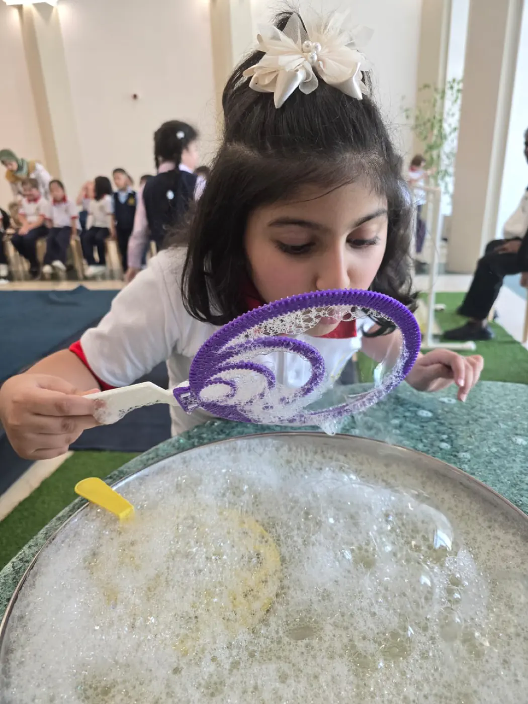
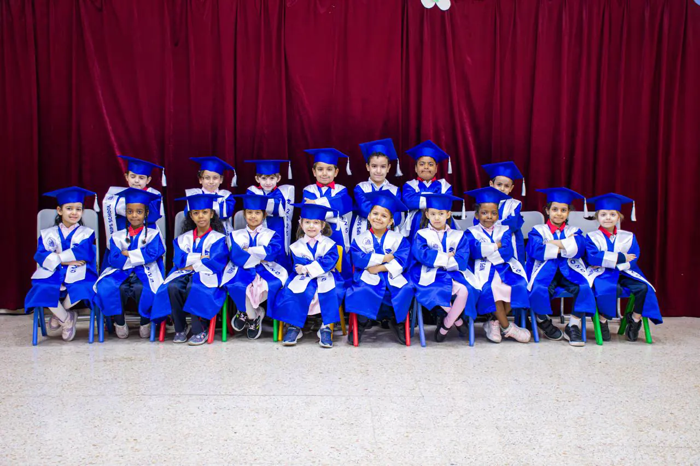
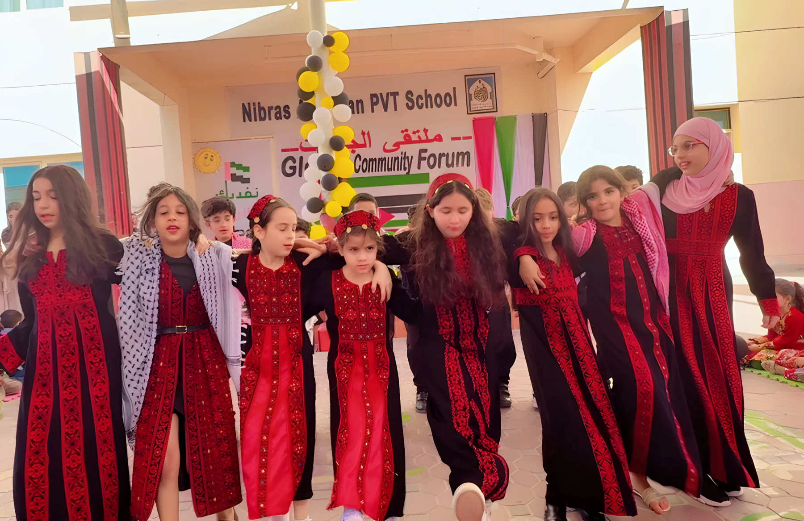
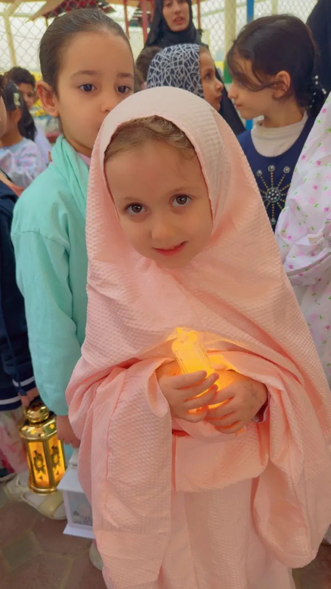
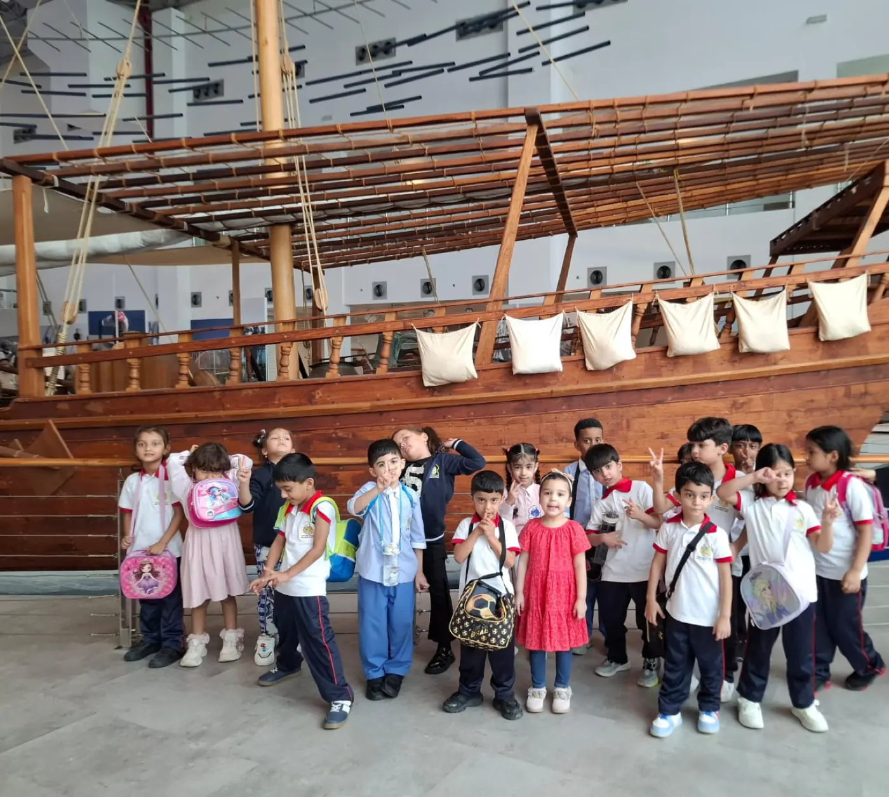
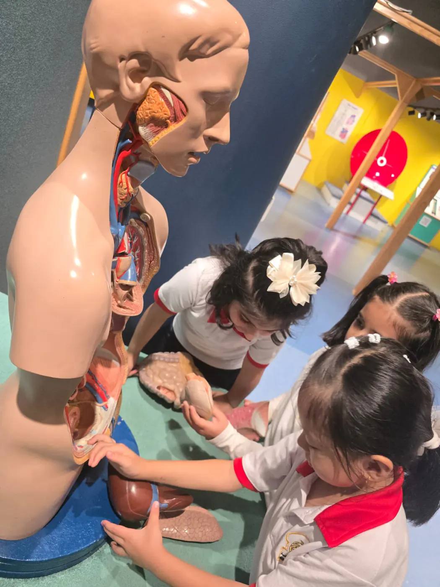

كلمة مديرة المدرسة
«المدرسة القوية يقودها الكثيرون.»
الأستاذة سارة طارق عبد الفتاحمديرة مدرسة نبراس الإيمان الخاصة
«تفوّق طلابنا قائم على الشراكة بين الطلاب وأولياء الأمور والهيئة التدريسية.» اقرأ كلمة المديرة
كيف تسجّل طفلك
ثلاث خطوات من أول اتصال حتى أول يوم دراسي.
- 1
اسأل عن مقعد
اتصل بالمدرسة أو أرسل رسالة واتساب بعمر طفلك والصف المطلوب.
- 2
اختبار القبول
إذا توفّر مقعد، تتواصل معك المدرسة وتحدد موعداً لطفلك لأداء اختبار القبول.
- 3
التسجيل
إذا اجتاز طفلك الاختبار، تعود لتعبئة طلب القبول (لولي الأمر فقط) وترتيب الرسوم مع قسم الحسابات.
موقعنا
مدرسة نبراس الإيمان الخاصة
منطقة العزرة، الشارقة، الإمارات
ابحث عن اسم المدرسة بالحروف الزرقاء الكبيرة، بالعربية والإنجليزية، أعلى المبنى.